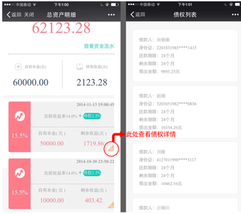

金融理财是玖富旗下移动理财品牌，专注解决流动性与高收益矛盾，主打每月1次可随取的高收益理财。
投资标的决定理财收益，金融理财远高于宝宝类货币基金的收益率，因为投资去向为经过玖富自己严格审核的分期GO、微信贷等优质个人小微债权，借款人均为高成长、高消费优质人群，收益率自然高出“宝宝”们一大截。
金融理财采用了资金和数据相分离的模式，玖富自主开发大数据处理为基础的债权匹配系统，按照一个理财人匹配若干个债权，实现理财人和借款人的点对点匹配，点击账户资金明细右下角有的“标”字样，即可看到点对点债权匹配明细。同时，通过第三方支付和富友账户托管，每个理财人以及每个借款人都有属于自己的子账户，账户之间完全点对点，中间没有任何居间账户，没有资金池，这在业界内还是率先完成的。

月账户有 30天锁定期，锁定期满后，当理财人发起赎回申请，未到期的债权会自动退回到债权匹配系统中进行二次匹配，由于玖富理财时间久、理财人多，所以未到期的债权会很快被“买主”投标买走，进入正常的点对点资金匹配状态，从而实现了每月一次的取现机会。然后通过第三方支付系统，赎回到银行卡上的时间为预约指定日当天。
1.月账户：
6%起步，按自然月逐月递增+0.5%的收益率，11%封顶。
即：一个月预期年化收益率6%，二个月6.5%，三个月7.0%，四个月7.5%，五个月8.0%，六个月8.5%，七个月9%，八个月9.5%，九个月10%，十个月10.5%，十一个月及更长时间保持11%
2.季账户：
3个月——预期年化收益率为8%
6个月——预期年化收益率为10%
9个月——预期年化收益率为11%
3.年账户：
预期年化收益率为12.0%
1.月账户：
· 买入金额100元起
· 单个用户累计买入月账户上限10万元
· 买入当天开始计息并产生收益（含周末及节假日）。 金融在原T+2工作日计息的基础上为用户补充至当天计息。
2. 季账户
· 买入金额100元起
· 账户无上限
· 买入当天开始计息并产生收益（含周末及节假日）。 金融在原T+2工作日计息的基础上为用户补充至当天计息。
3.年账户：
· 买入金额1000元起
· 账户无上限
· 买入当天开始计息并产生收益（含周末及节假日）。 金融在原T+2工作日计息的基础上为用户补充至当天计息。
1.月账户：
· 随用随取，每月1次。新买入本金满30日后可以取现
· 取现到账时间：预约指定日当天到账（周末及节假日不包含在其中）
· 若月账户可取现金额≥100元时，每次至少取现100元；若月账户可取现金额＜100元时，需一次性取走月账户全部金额。
2.季账户：
· 3个月、6个月、9个月产品的理财期限分别为90天、180天、270天
· 用户可自主选择资金到期处理方式，系统默认为“自动退出”，用户还可选择“本息续投”或“本金续投”。该资金到期前5个工作日内停止修改到期处理方式
· 自动退出：本金及产生的收益在到期后的下一个工作日（周末及节假日不包含在其中）到用户银行卡上
· 本息续投：资金到期后，系统自动将该本金及收益续投到金融季账户中。续投资金的预期年化收益率为续投时的当前收益率。
· 本金续投：资金到期后，系统自动将该本金续投到金融季账户中。续投资金的收益率为续投时的当前收益率。该笔本金产生的收益将在下一个工作日（周末及节假日不包含在其中）到用户银行卡上。若资金＜1000元时，将不可进行“本金续投”
3.年账户：
· 理财期限为365天
· 用户可自主选择资金到期处理方式，系统默认为“自动退出”，用户还可选择“本息续投”或“本金续投”。该资金到期前5个工作日内停止修改到期处理方式
· 自动退出：本金及产生的收益在到期后的下一个工作日（周末及节假日不包含在其中）到用户银行卡上
· 本息续投：资金到期后，系统自动将该本金及收益续投到金融年账户中。续投资金的预期年化收益率为续投时的当前收益率。
· 本金续投：资金到期后，系统自动将该本金续投到金融年账户中。续投资金的收益率为续投时的当前收益率。该笔本金产生的收益将在下一个工作日（周末及节假日不包含在其中）到用户银行卡上
1.点击首页下方“我的账户”链接进入我的账户页面
2.点击“我的账户”右上方的齿轮图标，进入“我的设置”页面
3.选择“修改取现密码”，输入原密码后再输入新密码，即修改成功
1.点击首页下方“我的账户”链接进入我的账户页面
2.点击“我的账户”右上方的齿轮图标，进入“我的设置”页面
3.选择“找回取现密码”，输入身份证号后再设置新密码，即找回成功
1.找到首页的“查看产品详情”链接
2.进入产品介绍页，点击“查看产品详情信息”
3.进入产品详情页最底部，即可查看各家银行卡的单笔支付限额和每日支付限额。
交易限额由发卡行规定，如要调整交易限额，请联系银行客服
开通条件（预留手机号与短信通知号码无关）
开通办法（需携带身份证、银行卡到银行柜台操作）
开通条件：办理银行卡时预留手机号码。
开通办法：银行柜台，告知柜员修改银行卡预留手机号。
工商银行开通条件：办理银行卡时在柜台开通快捷支付功能，并使用首次在工行办卡时预留的手机号码（工行预留手机号唯一且与姓名身份证绑定，即使办理新的银行卡，预留手机号如未修改过，则始终以第一次在工行办卡时所预留的那个号码为准）。
开通办法：到工行柜台，告知柜员“开通快捷支付功能，通过4204交易修改预留的号码”
招商银行开通条件：办理银行卡时预留手机号码。
开通办法：到银行柜台，告知柜员修改银行卡预留手机号。
中国银行开通条件：使用首次在中行办卡时预留的手机号码（中行预留手机号唯一且与姓名身份证绑定，即使办理新的银行卡，预留手机号如未修改过，则始终以第一次在中行办卡时所预留的那个号码为准）。
开通办法：到中行柜台，告知柜员修改预留手机号。
建设银行开通条件：使用首次在建行办卡时预留的手机号码（建行预留手机号唯一且与姓名身份证绑定，即使办理新的银行卡，预留手机号如未修改过，则始终以第一次在中行办卡时所预留的那个号码为准）。
开通办法：到建行柜台，告知柜员“开通网银，并修改银行卡预留手机号与网银手机号”。
光大银行开通条件：办理银行卡时预留手机号码，需通过柜面开通网银开通。
开通办法：到银行柜台，开通网银并修改预留手机号。
浦发银行开通条件：必须开通网上银行业务，办理银行卡时预留过手机号码，需柜面或网银开通银联无卡支付业务。
支付额度需要用户自行修改，如未修改，默认额度1000元。
开通办法：到浦发柜台，告知柜员“开通网银，并修改银行卡预留手机号与网银手机号”。同时修改支付额度
如果您的手机不幸丢失，我们将有以下措施保护您账户的资金支付安全
1.每笔交易都需要输入取现密码（切忌把取现密码保存在手机里）
2.他人无法通过“忘记取现密码”找回您的取现密码（如果您的银行卡与手机同时丢失，一定要优先挂失银行卡）
如果更换了新的手机号，请及时更换银行预留手机号与绑定手机号。
客服热线
服务时间 周一至周五9:30-18:00
您还可以在金融理财微信公众号中
输入文字联系 金融微信客服
市场有风险，投资需谨慎